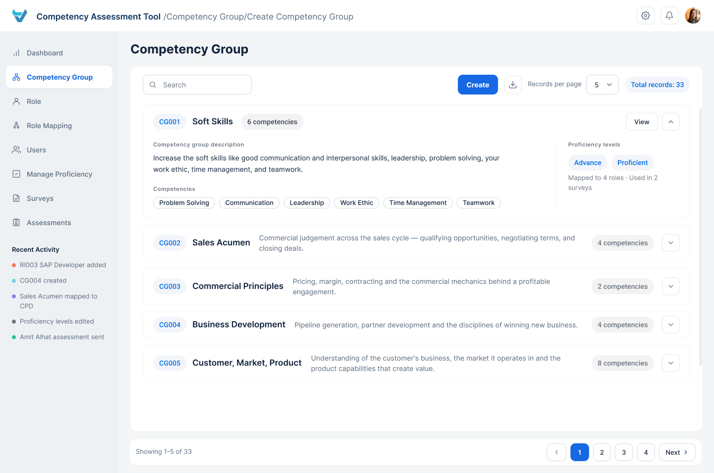
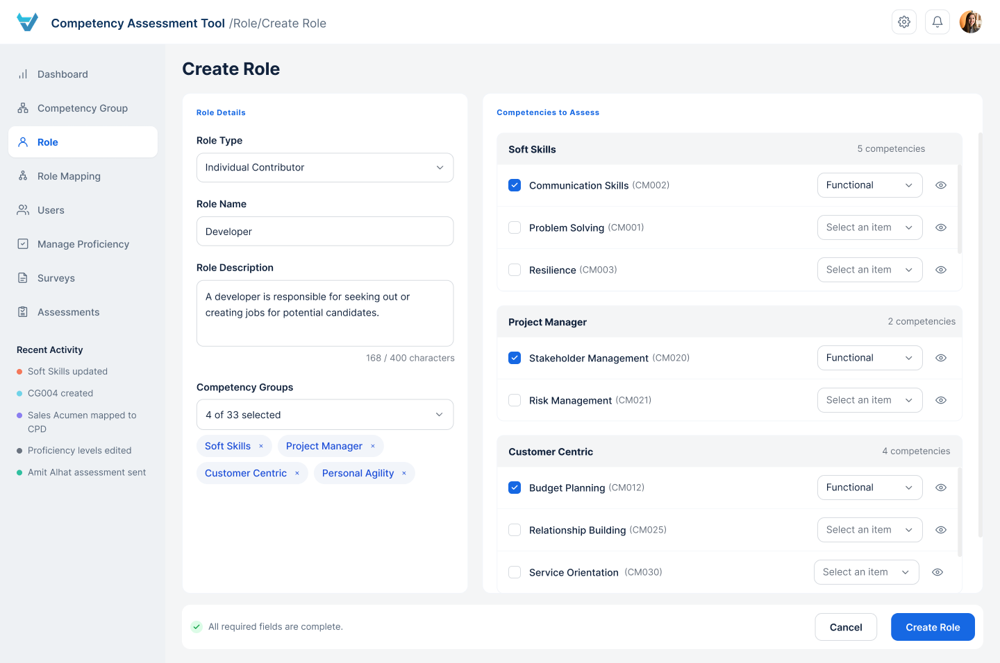
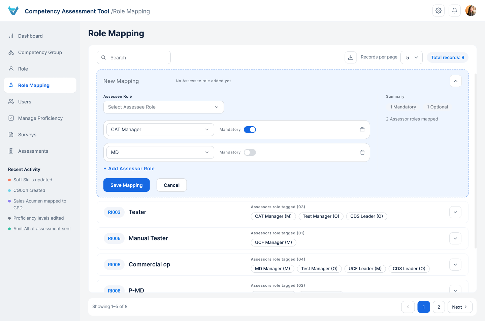
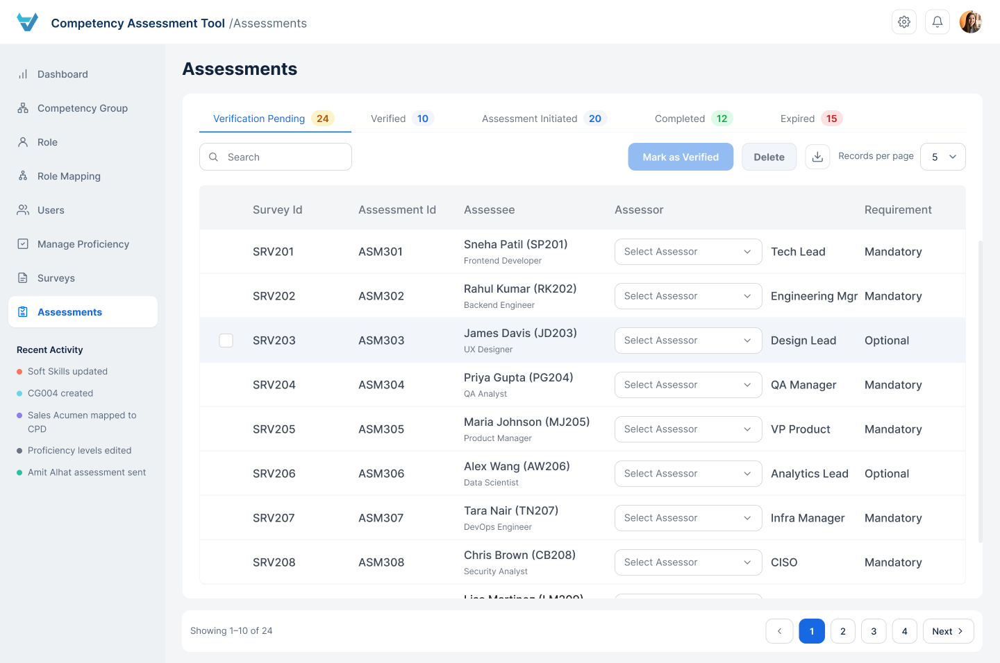
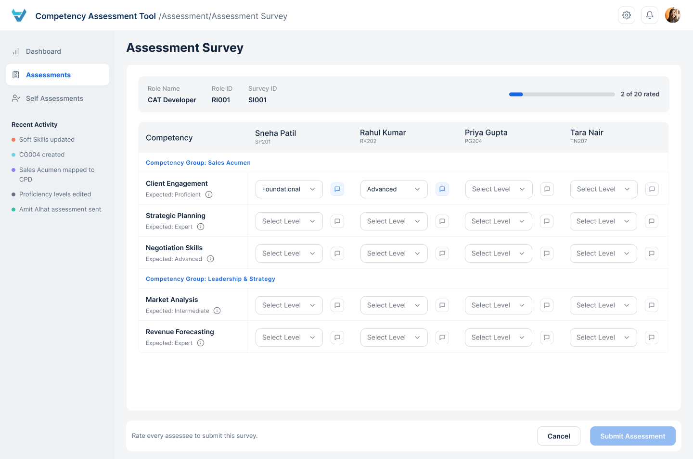
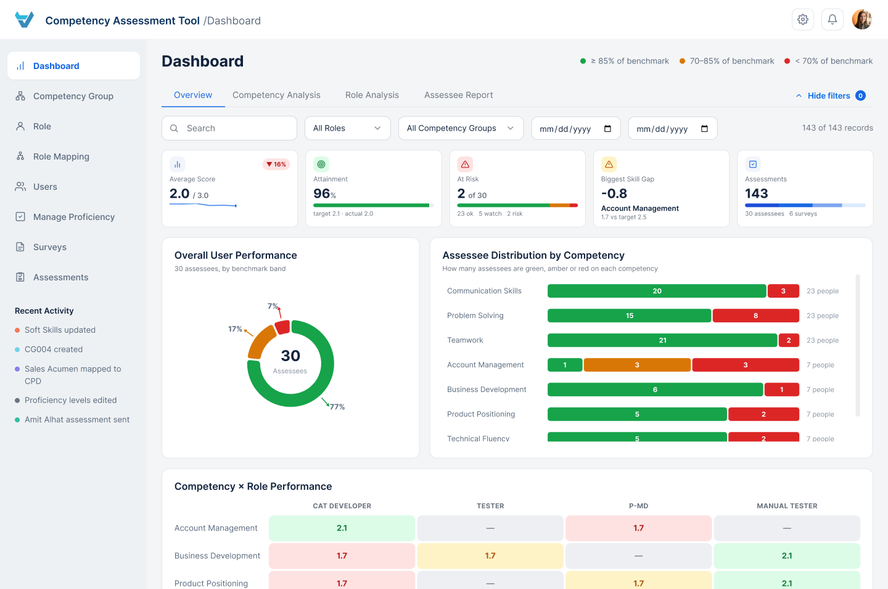

Interaction Design
UI Design
Bridging Imagination and Tech to Elevate Learning
Designed the seamless integration of AI and Augmented Reality into a mobile-friendly learning experience.
View CaseAs a Product Designer at TCS Interactive, I designed the Competency Assessment Tool (CAT) — a role-based web app that helps enterprise L&D teams run consistent, transparent competency assessments instead of juggling manual spreadsheets and third-party tools.
*Blue Harbor is a fictional client name used to protect confidentiality.
As a Designer at TCS, I was assigned to design a web application — the Competency Assessment Tool — to streamline and optimize the competency assessment process for Blue Harbor. This initiative aims to:
Accurately assess the current skill levels of different functional roles within the organization.
Empower leaders to support individual and team growth.
The existing competency assessment process relied on manual steps, making it time-consuming and prone to errors.
This led to inefficiencies, inconsistencies, and difficulty identifying skill gaps.
L&D admins struggled to manage competency frameworks, add or update roles, and keep a consistent, standardized approach across the organization.
A few definitions that come up throughout this case study.
The combination of knowledge, skills, abilities, and behaviors that contribute to individual and organizational performance.
A collection of related competencies that share a common theme or area of expertise.
The process of evaluating or measuring the knowledge, skills, abilities, or other qualities of individuals, groups, or entities.
Three roles keep the tool running — think of it as a coaching team.
The coach and regulating authority of the assessment team. They design the training drills (competency groups), assign players (Assessor and Assessee roles), track everyone's progress, and help them improve their skills.
The star player of the assessment game — a skilled referee, carefully evaluating each trainee's performance against the coach's guidelines and providing feedback to help them level up.
The trainee stepping onto the field — eager to show off their skills, taking on the challenges the L&D Admin sets, and using Assessor feedback to grow.
A small example team shows how the three roles connect in practice.
From the project documents shared by the client, I analyzed the content to devise an effective action plan. To deeply understand user needs, I conducted in-depth interviews across different phases of design, then organized everything I learned into clear groups — giving me a solid, well-scoped foundation to design from.
Competency Framework Management
Assessment Configuration and Scheduling
Assessor Management and Assignment
Assessment Monitoring and Reporting
Actionable Insights and Continuous Improvement
Viewing Assessments
Conducting Assessments
Assessment Completion and Review
Self-Assessment Participation
Conducting Assessments
Users struggled to access and understand assessment data, leading to confusion.
The organization relied on multiple third-party tools to manage assessments, forcing users to navigate between platforms and increasing complexity.
Managing multiple users' data was time-consuming and error-prone, resulting in data inconsistencies and inaccuracy.
Limited visibility into individual and organizational performance metrics made it difficult for stakeholders to assess progress and make informed decisions.
I started designing the Competency Assessment Tool by focusing on two core principles:
Each user group — L&D Admins, Assessors, or Assessees — sees only the functionality relevant to their role. The sidebar itself changes shape depending on who's signed in.
Creating new fields — whether for competency groups, roles, or assessment parameters — is broken into short, guided steps instead of one long form.
The design went through multiple rounds of iteration where features were refined, interfaces adjusted, and information visualization became more user-friendly. Here's a concrete walk-through of the whole system connected end to end, with a small example team.
Scenario
The L&D Admin needs to initiate the assessment for the roles of UX Researcher and Graphic Designer, both of which fall under the Assessee type of role. The Design Lead will be the Assessor for both roles — let's say Ava and John are the Design Leads, with the role already defined in the CAT system.
4 Proficiency levels have already been defined in the system by the L&D Admin:
Creating Competency Group
Creating Roles
Role Mapping
Creating Users
Starting Surveys
Assessments
Assessor
Assessee
Dashboard
Inside the tool
Five flows, from setting up competencies to reviewing results on the dashboard.
The Competency Group list shows every group with its ID, description and linked competencies, with a single Create button to start a new one.
Creation now lives on one screen: group details on the left, with each competency's attributes built up on the right against the Proficiency Levels chosen for that group — no multi-step wizard to click through.

List view

Create Competency Group
Creating a Role is a single screen too: role details on the left, and every competency from the selected Competency Groups on the right, ready to check off and assign an Expected Level to — no separate steps for details, groups and competencies.

Create Role
Role Mapping reveals which Assessor roles are responsible for assessing which Assessee roles. A new mapping expands right at the top of the list — pick the Assessee role, then attach one or more Assessor roles, marking any of them as mandatory.

List & create mapping
Assessments move through five statuses — Verification Pending, Verified, Assessment Initiated, Completed and Expired. Under Verification Pending, the admin links an Assessor to each Assessee before the pairing can move forward.

Verification pending
Signed in as an Assessor, the sidebar shrinks to just Dashboard, Assessments and Self Assessments. Opening an assessment brings up the Assessment Survey — every assigned Assessee laid out side by side, grouped by Competency Group, with a dropdown to rate each competency against its expected level and a comment icon for feedback.

Assessment Survey
The Dashboard is the main control hub — a one-stop place for reporting across four tabs: Overview, Competency Analysis, Role Analysis, and Assessee Report. From here, L&D Admins check completion rates, review average scores, spot competency gaps by role, and drill into any individual's strengths and weaknesses.

Overview tab
This case study offers a brief look at the key elements of my work, keeping in mind the limits of screen space — there are many more screens and interactions, such as the Dashboard's other three tabs, that aren't included here.
Explore Other Work
Designed the seamless integration of AI and Augmented Reality into a mobile-friendly learning experience.
View CaseImproved usability of the eQ Technologies canvas, keeping design-system constraints and cross-product consistency intact.
View CaseDesigned a mobile app from scratch that streamlines the IT ticket-raising experience — now used by 110,000+ employees.
View CaseContact
Have a project in mind, or just want to say hi? My inbox is always open.